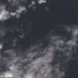
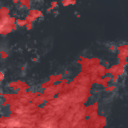

01
Location Selection
Select a Philippine Municipality
Select the region, province, and municipality or city that will be used as the reference location for the weather and satellite stages of the prototype.
02
Weather Observation
Current Location Weather
Current modeled precipitation and cloud-cover information for the selected municipality reference coordinates.
Current Condition
Waiting for weather data
Weather information will appear after the selected location is processed.
03
Satellite Observation
JMA Himawari Southeast Asia 2
Latest available Himawari B07 Short Wave Infrared satellite imagery for Southeast Asia.
Loading latest Himawari B07 imagery...
04
MATLAB Demonstration
MATLAB U-Net Cloud Segmentation
Satellite Image
→
MATLAB U-Net
→
Predicted Cloud Mask
Cloud Condition
FAIR
Moderate cloud coverage. Weather measurements are needed to assess possible signal loss.


Illustrative cloud-condition indicator based on predicted cloud coverage. Actual signal strength and link availability are not estimated in this stage.
05
Link Assessment
Current Rain Attenuation Assessment
Estimate the specific attenuation associated with the current rain rate for C-band or Ku-band operation.
PROPAGATION PARAMETERS
Link Inputs
Degrees
Automatically populated from Stage 2 when
Stage 5 is opened. You may edit the value
for scenario testing.
Awaiting Calculation
Specific Attenuation
—
γR in dB/km
Coefficient k
—
Frequency and polarization dependent
Exponent α
—
Frequency and polarization dependent
Link Impact
—
Prototype interpretation
Rain Attenuation Result
Select the link parameters and calculate the current rain-specific attenuation.